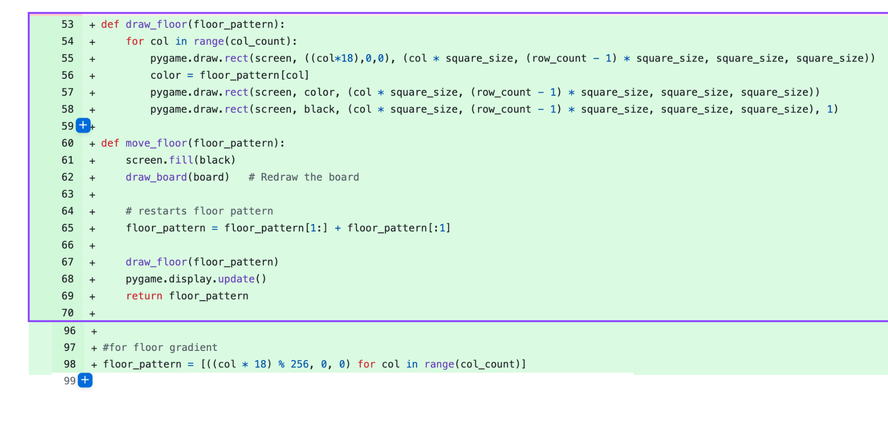

Task 2 - Floor moving
Development
With felix
making the floor a gradient it makes this step so much easier. The steps basically include making a
variable called floor_pattern. This variable is an array for the different R (RGB) values between 0 and
255 in increments of specific values based on how manty columns we have. It does this by making a one
line 'for' loop which is not easy to read for most beginner programmers,
but since this is the last tweak the floor requires it's fine. Then whenever the old create_floor()
function was called (now named draw_floor()) it would instead call the move_floor() function which
updates our floor pattern, and then redraws the floor with our new pattern. This guives the illusion
that the player is moving while in reality the player stays in the same x position the whole game.
